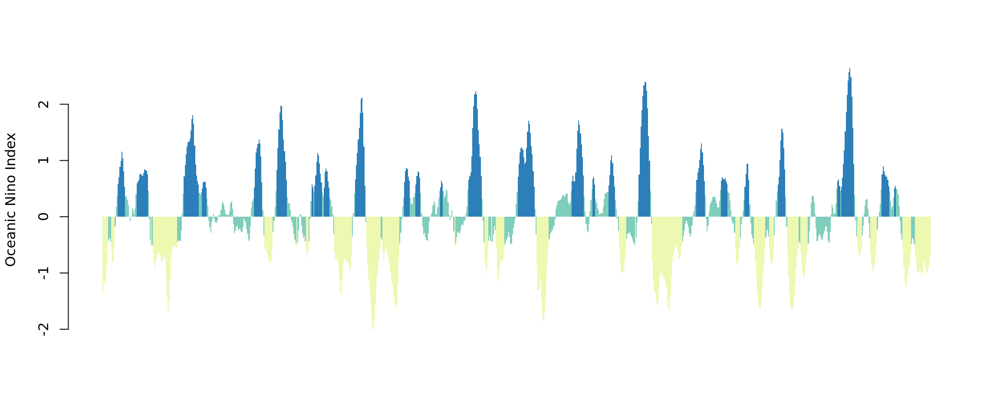

This is a bit of a grandiose title for a blog post. But it is important to have ambition right? In 2003, after releasing Michigan, Sufjan Stevens announced his intention to release one album as an ode to each of the fifty American states, appropriately named the Fifty States Project. Despite only completing two albums (the other being Illinois) I appreciate his ambition, and desire to be thorough (and also those wacky costumes).

It is that thoroughness which resonates with me and what I’d like to apply to the Hydrology CRAN Task View. Myself, along with Sam Zipper and Ilaria Prosdocimi, maintain the Hydrology task view with the express goal of creating a comprehensive and high–quality list of R packages related to the field of Hydrology. We introduced the task view, at a very high level, over at the rOpenSci blog last year. This post is the first in a series where I try some aspect of every package included in the task view. If Stevens’ can declared his Fifty States Project why can’t I take on the Hydrology Task View Project? My first foray into this is not terribly ambitious as I am going to discuss one of my own packages, rsoi, which was recently updated on CRAN with a new version.
rsoi
rsoi started out as a package to acquire El Niño-Southern Oscillation (ENSO) data and import it into R. This is the data that climate scientists use to determine which phase of the oscillation we are currently experiencing. Since that initial version, rsoi has gained several datasets and now functions more generally as simple R interface to as many climate indices as we can collect. All the raw data that rsoi accesses is directly from the US government’s National Oceanic and Atmospehric Administration (NOAA). Packages like rsoi facilitate reproducible workflows by providing convenient functions to access data stored on the web. (Sidebar: the most comprehensive package for accessing all manner of NOAA data is the rnoaa package by Scott Chamberlain which is also in the Hydrology task view 😉). As of version 0.5.1 rsoi provides access to these data (with the corresponding rsoi function in parentheses):
- Southern Oscillation Index (
download_soi) - Oceanic Nino Index (
download_oni) - North Pacific Gyre Oscillation (
download_npgo) - North Atlantic Oscillation (
download_nao) - Arctic Oscillation (
download_ao) - Antarctic Oscillation (
download_aao) - Multivariate ENSO Index Version 2 (
download_mei)
rsoi is on CRAN so installation proceeds typically:
install.packages("rsoi")The usage of a rsoi revolves around the download_* functions. For example if you want to read in the Oceanic Nino Index data you can run this code:
library(rsoi)
oni <- download_oni()
head(oni)# A tibble: 6 × 7
Year Month Date dSST3.4 ONI ONI_month_window phase
<int> <ord> <date> <dbl> <dbl> <chr> <fct>
1 1950 Jan 1950-01-01 -1.62 NA <NA> <NA>
2 1950 Feb 1950-02-01 -1.32 -1.34 JFM Cool Phase/La Nina
3 1950 Mar 1950-03-01 -1.07 -1.17 FMA Cool Phase/La Nina
4 1950 Apr 1950-04-01 -1.11 -1.18 MAM Cool Phase/La Nina
5 1950 May 1950-05-01 -1.37 -1.07 AMJ Cool Phase/La Nina
6 1950 Jun 1950-06-01 -0.74 -0.85 MJJ Cool Phase/La NinaEach climate index in rsoi is accessed by functions of the format download_[index abbreviation]. A quick plot of the ONI data demonstrates that we are currently in the Neutral ENSO phase (as of 19/01/2020).

This is the basic usage of rsoi that has been in place since it was first published to CRAN. Luckily Elio Campitelli found rsoi and made it better:
Me: "I've been downloading and reshaping ENSO data often. Maybe I should build an #rstats package to do it. "
— Elio Campitelli (@d_olivaw) October 17, 2019
Also me: "Mh.. I wonder if someone else has already done it"
The internets: "Here you go"https://t.co/CC7hVFXEjY
As of version 0.5.1, thanks to several contributions by Elio, rsoi now will optionally use a cache so that data are downloaded only once per R session. Not only this is more polite to NOAA as the data provider, this also provides some optimization for processes that repeateadly call rsoi functions. You can either use this cache in memory:
library(tictoc)
## accessing from the web
tic()
soi <- download_soi(use_cache = TRUE)
toc()1.028 sec elapsed##same session, accessing from the memory cache
tic()
soi <- download_soi(use_cache = TRUE)
toc()0.006 sec elapsedOr you can save it locally:
mei <- download_mei(use_cache = TRUE, file = "mei.csv")Subsequent calls of download_mei that have the use_cache argument set to TRUE, will automatically import that data stored on disk rather than access it from the web. This works for each function in rsoi. This is a really nice contribution from Elio.
A knock on CRAN Task Views, meritted or not, that I have heard is that they are simply an unvetted collection of packages. To a certain extent this is true as there is no formal process whereby a package gains acceptance to a task view. Rather package maintainers usually simply ask to be added and they are. This series of blog posts (n currently equalling 1) is designed to provide some additional exploration of packages in the Hydrology task view. Like Sufjan Stevens, this is an ambitious goal. However, writing a blog is much easier than making an album (have you heard Illinois?) so maybe I have a better chance.